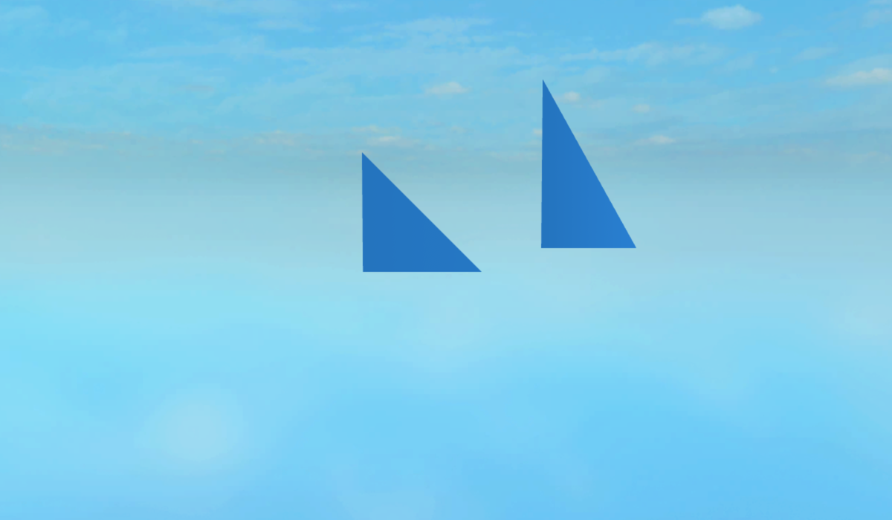
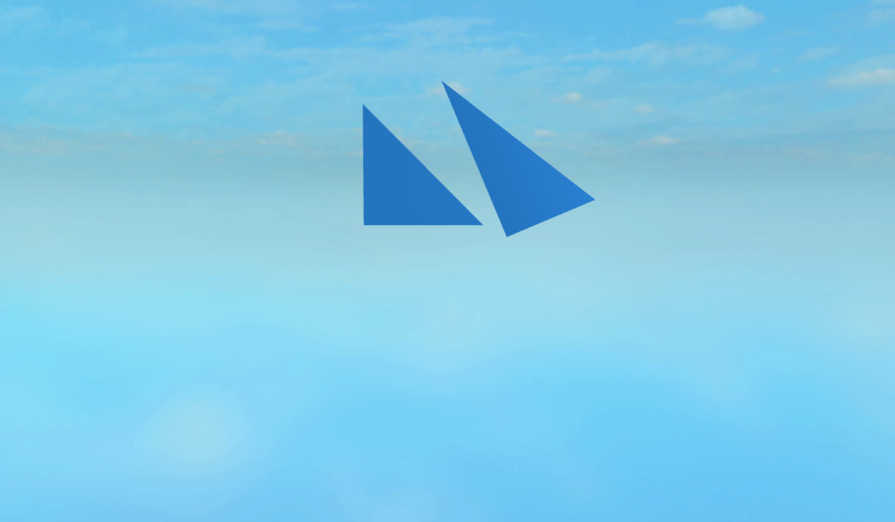

{kind=link}

Rodeo now retains glTF animation curves and morph deltas, renders initial morph weights, and builds Roblox playback rigs for translation and rotation. These views compare an independently authored reference against the imported scene using the same camera, lighting and viewport.
Two instances of one source triangle use different weights for “Tall” and “Wide.” The reference constructs the weighted positions and normalized normals directly. Pixel exact: 0 differing pixels.

The left triangle follows a cubic translation curve under a parent scaled by two. The right triangle follows a quaternion rotation curve. The reference uses the analytic positions and rotation. 81 of 840,000 pixels differ, with mean RGB differences below 0.00016/255, at the rotated edge.

Fixture: motion.gltf. Capture: capture.luau. Exact STEP, LINEAR and CUBICSPLINE data is exported from the full scene result. Native preview uses 60 Hz samples. Its scale and morph-weight channels are explicitly excluded from playback; both remain intact in the exported glTF. The images therefore compare supported native translation/rotation with the initial morph weights held constant.
Validation: 42 Rust tests, 24 CLI integration tests, and 10 client-API scene tests passed. Coverage includes sparse deltas, tangents, per-instance weights, live mesh edits, face-corner splitting, scaled animation frames, Bone and Motor6D playback, independent clips, repeated round trips, and failed exports preserving the destination. Generated playback helpers are omitted from scene export. Khronos validation of the GLTF/GLB outputs and reflected round trip reports zero errors; the preserved nested skinned-mesh hierarchy produces its standard non-root warning.
Iteration notes: first visual pass establishes an independent analytic baseline. Initial pose matches exactly; the playback difference is consistent with native quaternion quantization. All full-resolution captures are linked above.{kind=link}
{kind=link}